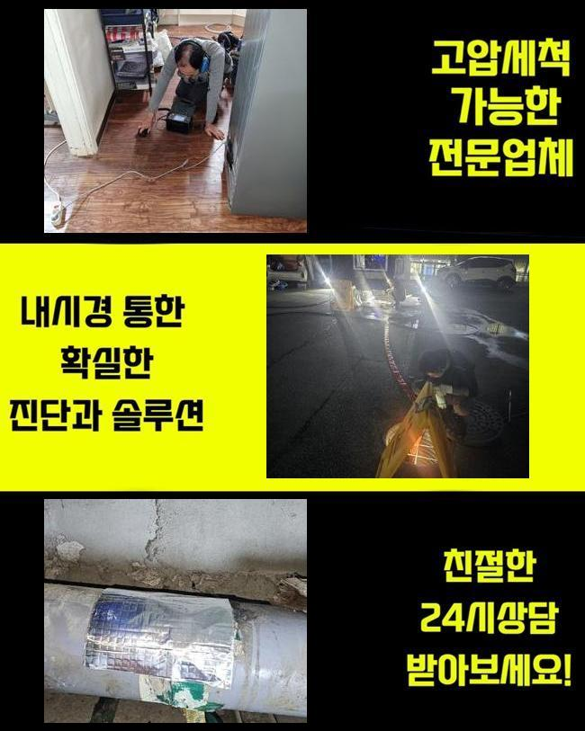
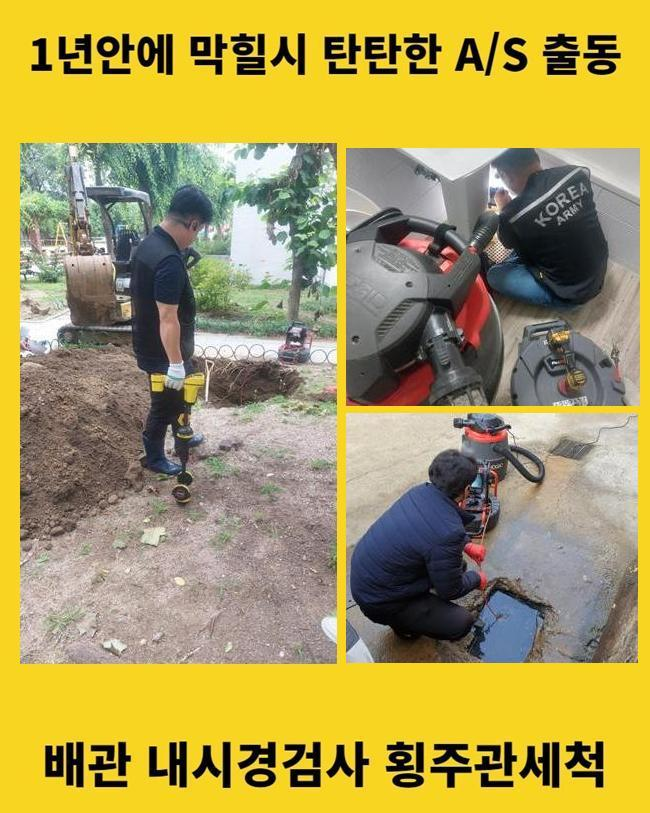
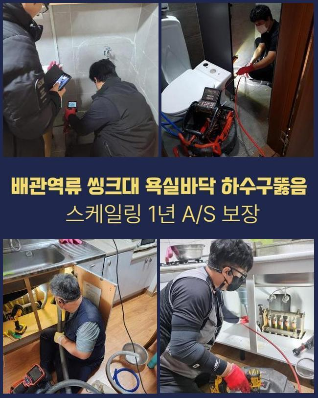
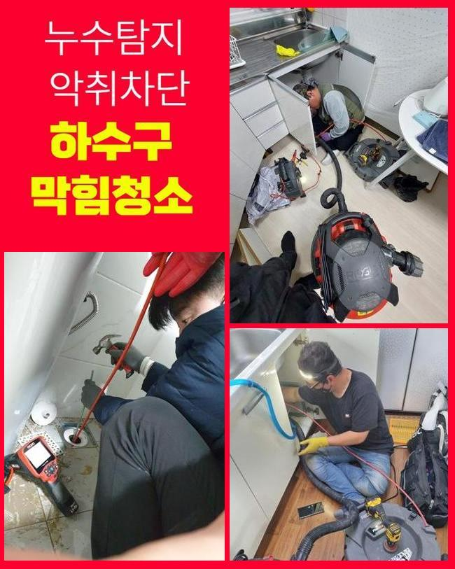

🏠 동두천 광암동 하수도막힘 중앙동 하수구청소장비 설비업체
동두천 중앙동 싱크대막힘 전문 시공 후기

📋 작업 개요
- 위치: 동두천 중앙동, 중앙동, 동두천
- 서비스 유형: 싱크대막힘, 변기막힘, 하수구막힘, 배관막힘, 역류해결, 뚫는업체, 배관청소, 고압세척
- 작업 일시: 2025. 5. 24. 16:16
- 업체명: 하수구수사대 (010-5615-2118)
🔍 문제 상황
동두천 광암동 하수도막힘 중앙동 하수구청소장비 설비업체
주방같은 장소는 물이용 빈도수가 높기에 막힘현상과 연관하여 피하기란 어렵죠
셀프시도는 도움되긴 하나 무리해서 셀프대처를 취하신다면 증세가 심해질수 있어요
60도~70도 사이에 온수나 클리너같은 제품으로 처리해보시고 뚫리지 않으면 배관업체의 손길을 받으셔야 한답니다
며칠전에 주방쪽 막힘문제가 발생해서 현장으로 방문해 드렸는데요
물빠짐이 정상적이지 않았으며 되려 하수구쪽에서 하수가 역류하여 신속조치가 필요해 보였습니다
역류문제가 발생한다면 악취증세까지 발현될수 있기에 불편함이 배로 늘어나겠죠
의뢰자분이 알려주신 바로는 배수자체가 느려지기 시작했고 시간흐르며 결국은 역류문제가 발생된 것이라고 하셨어요
이러한 경우에는 간단하게 막힘현상이 일어난것이 아닐수가 있으며 배관안쪽에 음식찌꺼기와 기름슬러지가 많은 양으로 누적되어있을 확률자체가 높았는데요
막힌원인에 대하여 알아내기위해 하부장아래쪽을 열어보았어요
열어보니 육안으로도 보였던것은 배관쪽과 이어져있는 호스주위의 심각한 기름때 흔적이었죠

🔎 원인 분석
💡 전문가 진단: 정밀 진단 장비를 사용하여 슬러지의 고착 여부를 판명하고 타격/세척 작업을 실시했습니다.
음식잔해들이 주름호스 부근으로 흘러넘치면서 막힌정도가 심각했어요
각종 잔해들이 누적되면서 배수를 막았고 호스근처에서 역류현상이 일어난것으로 파악이 가능했어요
이와같은 문제가 발생하는 원인을 설명드리면 싱크대배관 특성상 오염물이 쉬운 방법으로 누적될수있는 구조이기에 여러종류의 퇴적물이 뭉쳐지게 되버리면 금방 막히는 것이죠
고객님도 주방을 이용하면서 느릿하게 배출되는걸 인지했다고 말씀하셨지만 점차 느려지는것이 막힘이 일어나기전 징조라고 할수있죠
막힌곳을 해결하고 악취현상도 없애고자 저희업체는 앞서 석션도구를 이용해보기로 했습니다
석션기계를 작동시켜 하수를 빨아들이면 오염물과 슬러지가 흡입되면서 조금은 문제현상이 해소되는 경우들도 있어요
그렇지만 금일에 방문드렸던 장소는 문제가 심각했죠
석션작업을 진행했더니 물들을 제거되었지만 생각했던것 만큼은 다량으로 잔해물들이 제거되진 못했는데요
석션과정이 이루어져도 진전없이 배수관은 막힌상태여서 다른 방법이 필요했어요
이러한 경우는 하수관속 깊은위치에 다양한 이물이 누증되면서 씽크대막힘이 발생된 것인데요
그리하여 정확한 원인에 대하여 찾아보기위해 내시경장비로 하수관내부를 살펴보기로 했죠

🔧 작업 과정
관로 탐지기구인 내시경을 세밀하게 준비하여 하수도내에 최심부까지 하수관 카메라를 투입한후 살펴보았더니 막혀있는 정도가 심각하다는걸 점검했죠
내시경 화면을 살피니 상당수의 오염물이 곳곳마다 누적된 상황이었고 배관안에 끈적하게 접착된 슬러지들이 상당했어요
내벽부분까지 오염된경우 석셕만으로는 문제를 해결할수 없다보니 고객께도 어떠한 상황인지 내시경을 통해 보여드렸습니다
오랜시간 배수관을 관리하시지 않을경우 앞서 말씀드린 문제들을 경험하실 겁니다
고객님께선 혹시라도 하수구를 교체하는 방안으로 이어질까 비용적인 부분을 고려하셨지만 준비한 도구들로 교체작업을 진행하지않고 제거하는 과정들을 설명드렸죠
하수구청소를 본격적인 단계로 시작했죠
즉각적으로 작업해 나가면서 신중하게 세척을 진행했죠
시야에 물의 경로가 안보일만큼 찌꺼기나 오염물질이 쌓여있을경우 샤프트기계를 활용해서 덩어리로 이루어진 이물을 조각낸뒤 석션기계를 투입하여 분쇄된 이물들을 흡입하는 세척작업으로 착수해야하죠
한번만으론 고착화된 이물을 없애는것은 불가능 하기에 내시경모니터에 잔해물들이 명확하게 없어질때까지 반복하여 작업을 진행해야만 한답니다
반복하는 방법이 반드시 필요한 과정이라고 단언할수 있어요
시간여부는 장소마다 다르겠지만 금일 작업한 장소는 여러가지의 잔해물이 상당했기에 1시간동안 세척과정으로 누적되어있는 이물을 제거했어요
계속해서 진행하면서 배수구속이 깔끔해진것이 확실히 보였습니다
고객도 같이 확인하셨는데 잔여이물이 안보였고 깨끗해진 배관으로 변화된것을 확인하게 되었어요
원활하게 배수상태가 이루어졌는지 확인하려고 씽크대수전을 틀은뒤 하수구에 부어서 배수상황이 어떠한지 체크했어요
테스트를 해보니 물막힘 증상 없이 물빠짐이 확실히 흘러나가는걸 체크했습니다
일상영위시 무슨 방안으로 관리해 주는게 정확하게 처리할수있는 방법인지도 설명드리고 주변에 튄 이물질 처리도 깔끔히 해드렸죠
석션통안에 쌓여진 이물질들을 살펴봤는데 계란껍질같은 찌꺼기가 다량으로 발견되었죠
물과 함께 녹지못하는 이물이므로 물빠짐이 정상적으로 이루어지지 않은것으로 파악할수 있었어요


✅ 작업 완료
통쪽에 모인 오염물은 일반쓰레기에 버렸고 오수만 변기와 함께 내려서 막힘을 확실히 해결했답니다
악취를 풍기거나 배수상태가 느려진경우 방치는 삼가주세요
방임하실 경우에는 문제악화가 불거질수 있으므로 조심하세요!
씽크대가 막히는것은 아무때나 발생될수있는 문제이므로 관련징조를 보이게될때 신속조치를 취해보세요!
하수구와 관련된 내용들은 유선상으로도 상담해드릴수 있으니 시간상관없이 편하실때 문의바래요


⚠️ 주방 싱크대 배관 막힘 예방 수칙
- ✅ 기름기가 묻은 식기나 프라이팬은 설거지 전 키친타올로 반드시 기름때를 닦아내세요.
- ✅ 주기적으로 싱크대 개수대에 뜨거운 물을 가득 받아 한 번에 내려 배관 내부 기름을 씻어내세요.
- ✅ 배수구 거름망을 미세한 필터로 사용하시고 음식물 찌꺼기가 틈으로 새어 들지 않게 관리하세요.
- ✅ 베이킹소다와 식초를 뜨거운 물과 함께 일주일에 한 번씩 부어주면 배관 살균과 막힘 예방에 좋습니다.
💡 핵심 정리
- 확실한 장비 작업(내시경 점검 및 샤프트 스케일링)으로 원인을 뿌리 뽑습니다.
- 작업 후 1년 이내에 동일한 부위 재발 시 100% 무상 A/S 서비스를 보장합니다.
- 서울 · 경기 · 인천 전 지역에 24시간 언제든 긴급 출동할 수 있도록 항시 대기 중입니다.
❓ 자주 묻는 질문 (FAQ)
🚨 동두천 중앙동 싱크대막힘 문제로 고민이신가요?
정확한 원인 진단과 확실한 시공으로 재발 없는 해결을 약속드립니다.
24시간 긴급 출동 | 서울 · 경기 · 인천 전지역 | 1년 내 재발 시 무상 A/S